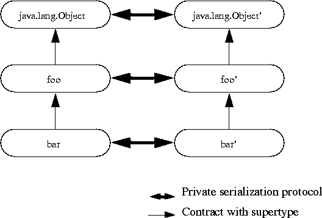

| CONTENTS | PREV | NEXT | Java Object Serialization Specification |
In the evolution of classes, it is the responsibility of the evolved (later version) class to maintain the contract established by the nonevolved class. This takes two forms. First, the evolved class must not break the existing assumptions about the interface provided by the original version, so that the evolved class can be used in place of the original. Secondly, when communicating with the original (or previous) versions, the evolved class must provide sufficient and equivalent information to allow the earlier version to continue to satisfy the nonevolved contract.
For the purposes of the discussion here, each class implements and extends the interface or contract defined by its supertype. New versions of a class, for example
foo', must continue to satisfy the contract forfooand may extend the interface or modify its implementation.Communication between objects via serialization is not part of the contract defined by these interfaces. Serialization is a private protocol between the implementations. It is the responsibility of the implementations to communicate sufficiently to allow each implementation to continue to satisfy the contract expected by its clients.